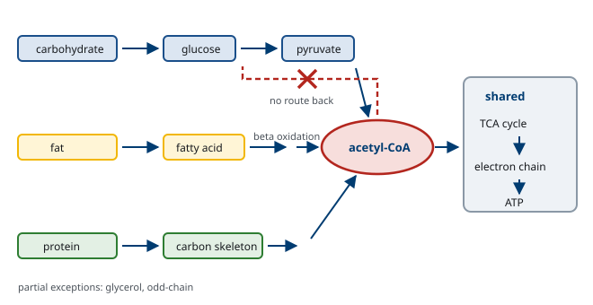
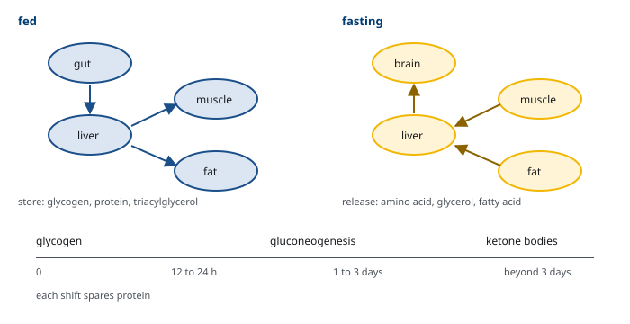

M01-W04-L02 · 인체일반생물학과 기초세포생물학
대사기초 요약: 에너지·영양소·섭식과 공복
Metabolism: Energy, Nutrients, Feeding and Fasting
학습목표
- 대사를 이화와 동화로 나누고 두 방향이 왜 서로 다른 경로를 쓰는지 설명한다.
- ATP가 에너지 통화로 쓰이는 이유를 공역의 관점에서 설명하고 자유에너지의 부호를 해석한다.
- 산화환원 반응에서 전자 운반체가 하는 일을 쓰고 NAD⁺와 NADPH의 역할 차이를 구분한다.
- 세 영양소의 분해 경로가 공통 중간체로 모이는 구조를 설명하고 그 이점을 쓴다.
- 포도당이 갈 수 있는 네 갈래 경로를 들고 각 경로가 선택되는 조건을 설명한다.
- 지방이 저장과 동원에 유리한 이유를 화학 구조로 설명한다.
- 아미노산의 탄소 골격과 질소가 서로 다른 운명을 갖는다는 것을 설명한다.
- 섭식 상태와 공복 상태에서 장기별 대사의 역할 분담을 서술한다.
- Insulin과 glucagon이 대사 방향을 바꾸는 방식을 설명하고 두 호르몬의 비율이 갖는 의미를 쓴다.
- 에너지 균형의 식을 쓰고 기초대사량을 정하는 요인을 설명한다.
- 비타민과 무기질의 기능을 범주로 분류하고 결핍이 특정 증상을 내는 이유를 설명한다.
선수지식
- M01-W01-L03 소화계 요약 — 영양소의 소화와 흡수, 간의 기능
- M01-W02-L02 내분비계 요약 — insulin과 glucagon, 호르몬의 작용 방식
- M01-W05-L02 생체분자와 막의 구조 — 탄수화물, 지질, 단백질의 기본 구조
강의 구성
- 1. 대사가 답해야 하는 질문
- 2. 에너지의 통화 — ATP와 공역
- 3. 산화환원과 전자 운반체
- 4. 세 영양소의 큰 지도
- 5. 포도당의 네 갈래
- 6. 지방 — 왜 저장에 유리한가
- 7. 아미노산 — 탄소와 질소가 갈라진다
- 8. 섭식과 공복 — 장기별 역할 분담
- 9. 호르몬 스위치 — 방향을 정하는 신호
- 10. 대사 경로는 어디서 조절되는가
- 11. 에너지 균형과 기초대사량
- 12. 대사를 측정하는 법
- 13. 미량영양소 — 비타민과 무기질
- 14. 대사 이상을 읽는 논리
- 15. 이 수업이 이어지는 곳
1. 대사가 답해야 하는 질문
살아 있다는 것은 질서를 유지하는 일이다. 열역학 제2법칙에 따르면 고립계의 무질서는 증가하는데, 생물은 고도로 조직된 상태를 유지한다. 모순이 아니다. 생물은 고립계가 아니며, 주변에서 에너지를 받아들여 질서를 만들고 그 대가로 주변의 무질서를 더 크게 늘린다. 대사(metabolism) 는 이 거래를 수행하는 화학 반응의 총체다.
대사는 두 방향으로 나뉜다.
- 이화(catabolism): 큰 분자를 작은 분자로 분해하며 에너지를 꺼낸다. 산화 반응이 중심이고 전자 운반체가 환원된다.
- 동화(anabolism): 작은 분자로 큰 분자를 만든다. 에너지를 쓰고 환원력이 필요하다.
두 방향이 왜 다른 경로를 쓰는가. 포도당을 분해하는 경로와 만드는 경로는 대부분의 단계를 공유하지만 몇몇 단계에서 서로 다른 효소를 쓴다. 이유가 세 가지다.
첫째, 열역학적으로 되돌릴 수 없는 단계가 있다. 분해에서 크게 에너지를 방출한 단계는 역방향으로 그냥 돌릴 수 없고, 다른 방법으로 우회해야 한다.
둘째, 따로 조절하기 위해서다. 같은 효소가 양방향을 담당하면 한쪽을 켜는 신호가 다른 쪽도 켜게 된다. 두 경로가 동시에 돌면 ATP만 소모하는 무익 회로가 된다. 서로 다른 효소를 쓰면 하나를 켜면서 다른 하나를 끌 수 있다.
셋째, 공간을 나눌 수 있다. 분해는 세포질에서, 합성은 미토콘드리아 안에서처럼 구획을 달리하면 두 과정이 간섭하지 않는다.
2. 에너지의 통화 — ATP와 공역
자유에너지. 반응이 저절로 일어나는지를 정하는 것은 자유에너지 변화(ΔG)다. 음수이면 저절로 일어나고(발열성), 양수이면 에너지를 넣어야 일어난다(흡열성). 중요한 것은 ΔG가 속도를 말하지 않는다는 점이다. 포도당이 산소와 반응해 CO₂와 물이 되는 반응은 ΔG가 크게 음수이지만, 설탕이 상온에서 저절로 타지는 않는다. 속도를 정하는 것은 활성화 에너지이며, 효소가 그것을 낮춘다. 효소는 반응의 방향이나 평형을 바꾸지 않고 도달 속도만 바꾼다.
공역(coupling). 세포는 ΔG가 양수인 반응을 ΔG가 음수인 반응과 묶어 전체의 합을 음수로 만든다. 두 반응이 공통 중간체를 공유하거나 같은 효소 위에서 함께 일어나야 성립한다. 단순히 옆에서 에너지가 나오는 것으로는 부족하다.
ATP가 통화인 이유. ATP의 말단 인산 결합이 가수분해될 때 상당한 자유에너지가 방출된다. 그런데 ATP가 선택된 이유는 에너지가 가장 크기 때문이 아니다. 세포 안에는 ATP보다 인산 전달 전위가 높은 분자도 있다.
ATP가 적합한 이유는 중간에 있기 때문이다. 더 높은 전위를 가진 분자(phosphoenolpyruvate, creatine phosphate 등)에서 인산을 받을 수 있고, 더 낮은 전위를 가진 분자에 인산을 넘길 수 있다. 에너지를 받는 쪽과 주는 쪽 사이에 놓인 중개자로서 적합한 위치에 있다. 돈이 금보다 가치가 커서가 아니라 교환의 매개로 적합해서 통화가 되는 것과 같다.
또 하나의 조건은 반응성의 균형이다. 너무 불안정하면 저절로 분해되어 낭비되고, 너무 안정하면 꺼내 쓰기 어렵다. ATP는 열역학적으로는 불안정하지만 반응 속도론적으로는 안정해, 효소가 없으면 쉽게 분해되지 않는다. 그래서 세포가 원하는 시점에 원하는 곳에서만 쓸 수 있다.
저장되지 않는다. 성인 몸의 ATP 총량은 약 50 g에 불과하지만 하루에 회전시키는 양은 체중과 비슷한 수십 kg에 이른다. 같은 분자가 하루에 수백에서 수천 번 재생된다는 뜻이다. ATP는 저장고가 아니라 흐름이며, 그래서 생산이 몇 분만 멈춰도 치명적이다.
3. 산화환원과 전자 운반체
이화 작용의 본질은 산화다. 영양소에서 전자를 떼어 내 결국 산소로 넘기고, 그 과정에서 방출되는 에너지로 ATP를 만든다.
산화와 환원의 실제 모습. 생화학에서 산화는 대개 수소 원자(전자와 양성자)를 잃는 것으로 나타난다. 탄소에 수소가 많이 붙어 있을수록 환원된 상태이고 산화되었을 때 더 많은 에너지를 낼 수 있다. 지방이 탄수화물보다 그램당 열량이 두 배 이상인 근본 이유가 여기에 있다. 지방산의 탄소는 거의 수소로만 둘러싸여 있고, 탄수화물의 탄소는 이미 산소와 결합해 부분적으로 산화되어 있다.
전자 운반체. 전자를 직접 산소로 넘기면 에너지가 한꺼번에 열로 방출되어 쓸 수 없다. 세포는 전자를 운반체에 실어 단계적으로 전달하며 에너지를 조금씩 꺼낸다.
- NAD⁺ / NADH: 이화 작용의 주된 운반체다. 받은 전자를 electron transport chain으로 가져가 ATP 생산에 쓴다.
- FAD / FADH₂: 같은 역할이지만 전달 지점이 달라 NADH보다 적은 ATP를 낳는다.
- NADP⁺ / NADPH: 구조는 NAD와 거의 같고 인산기 하나만 다르다. 그런데 쓰임이 완전히 다르다. NADPH는 ATP 생산이 아니라 합성 반응의 환원력과 항산화 방어에 쓰인다.
NAD와 NADP를 구분하는 설계가 왜 중요한가. 인산기 하나 차이로 효소가 둘을 구별하므로, 세포는 두 풀을 독립적으로 유지할 수 있다. 실제로 세포 안에서 NAD는 대부분 산화형(NAD⁺)으로, NADP는 대부분 환원형(NADPH)으로 유지된다. 한쪽은 전자를 받을 준비가 되어 있고 다른 쪽은 전자를 줄 준비가 되어 있는 것이다. 분해와 합성을 동시에 수행하면서도 서로 간섭하지 않게 하는 장치이며, 1절에서 본 "두 방향을 분리한다"는 원칙이 조효소 수준에서 구현된 예다.
4. 세 영양소의 큰 지도
탄수화물, 지방, 단백질은 구조가 전혀 다르지만 분해 경로는 한 지점으로 수렴한다. 그 지점이 acetyl-CoA다.
- 탄수화물 → 포도당 → pyruvate → acetyl-CoA
- 지방 → 지방산 → β 산화 → acetyl-CoA
- 단백질 → 아미노산 → 탄소 골격 → pyruvate, acetyl-CoA, 또는 TCA cycle의 중간체
모인 acetyl-CoA는 TCA cycle에서 완전히 산화되어 CO₂가 되고, 떼어 낸 전자는 NADH와 FADH₂에 실려 electron transport chain으로 간다. 거기서 산소로 전달되며 만들어진 양성자 기울기가 ATP synthase를 돌려 ATP를 만든다.
수렴 구조의 이점이 세 가지다.
1. 경제성. 세 영양소마다 완전한 산화 경로를 따로 갖출 필요가 없다. 공통 구간 하나로 충분하다. 2. 유연성. 들어오는 연료의 종류가 바뀌어도 같은 기계가 처리한다. 식사 내용이 날마다 달라도 세포가 대응할 수 있는 이유다. 3. 상호 전환의 교차로. 공통 중간체가 있으므로 한 영양소에서 다른 영양소로 바꿀 수 있다.
마지막 항목에는 중요한 제약이 하나 있다. 사람은 지방산을 포도당으로 바꿀 수 없다. 지방산이 acetyl-CoA가 되는 단계는 되돌릴 수 없고, acetyl-CoA에서 포도당으로 가는 경로가 없기 때문이다. 반대 방향, 즉 포도당에서 지방을 만드는 것은 가능하다. 이 비대칭이 공복 대사 전체를 규정한다. 탄수화물이 떨어지면 지방으로 포도당을 만들 수 없으므로 다른 방법을 찾아야 하고, 그 결과가 8절에서 볼 단백질 분해와 ketone body다.

5. 포도당의 네 갈래
세포로 들어온 포도당은 바로 인산화되어 glucose-6-phosphate가 된다. 인산이 붙으면 막을 통과하지 못하므로 세포 안에 가두는 효과가 있다. 여기서 네 갈래로 갈린다.
1. Glycolysis: 세포질에서 pyruvate까지 분해한다. 산소가 있으면 pyruvate가 미토콘드리아로 들어가 acetyl-CoA가 되고, 없으면 젖산이 된다. 적은 양이지만 산소 없이도 ATP를 낼 수 있는 유일한 경로다. 2. Glycogen 합성: 간과 근육에서 저장 형태로 쌓는다. 간의 glycogen은 혈당 유지에 쓰이고, 근육의 glycogen은 그 근육 자신만 쓴다. 근육에는 glucose-6-phosphatase가 없어 포도당을 혈액으로 내보낼 수 없기 때문이다. 3. Pentose phosphate pathway: ATP를 만들지 않는다. NADPH와 핵산 합성에 쓰이는 ribose-5-phosphate를 만든다. 지방 합성이 활발한 조직과 적혈구에서 중요하다. 4. 지방 합성으로의 전환: 남으면 acetyl-CoA를 거쳐 지방산으로 바뀌어 저장된다.
어느 갈래로 갈지는 세포의 종류와 상태가 정한다. 간은 네 갈래를 모두 쓰고, 적혈구는 1번과 3번만 쓸 수 있으며, 뇌는 주로 1번을 쓴다.
저장 형태로 glycogen을 쓰는 이유. 포도당을 그대로 쌓으면 삼투압이 감당할 수 없이 올라간다. 수천 개의 포도당을 하나의 거대 분자로 묶으면 삼투압 부담이 수천 분의 일로 줄어든다. 또 가지가 많은 구조이므로 여러 끝에서 동시에 떼어 낼 수 있어 빠르게 동원된다. 저장 효율과 동원 속도를 함께 얻은 구조다.
다만 glycogen의 저장량에는 한계가 있다. 간과 근육을 합쳐 약 400~500 g이고, 열량으로는 하루분이 되지 않는다. 장기 저장은 지방이 맡는다.
6. 지방 — 왜 저장에 유리한가
지방이 장기 저장 형태로 선택된 이유는 두 가지이며, 둘 다 화학 구조에서 나온다.
첫째, 그램당 에너지가 크다. 지방 1 g이 약 9 kcal, 탄수화물과 단백질이 약 4 kcal다. 3절에서 본 대로 지방산의 탄소가 더 환원된 상태이기 때문이다.
둘째, 물을 끌고 다니지 않는다. Glycogen은 친수성이어서 자기 무게의 약 2~3배의 물과 함께 저장된다. 실제 저장 효율로 계산하면 지방이 glycogen의 약 6배가 된다. 같은 에너지를 glycogen으로 저장한다면 체중이 수십 kg 더 나가게 된다.
대가는 속도와 조건이다. 지방산을 동원하려면 지방조직에서 분해하고 혈액으로 운반하고 미토콘드리아로 들여와야 하므로 glycogen보다 느리다. 또 β 산화는 산소를 필요로 하므로 무산소 상태에서는 쓸 수 없다. 단거리 전력 질주에 지방을 쓸 수 없는 이유다.
지방산의 미토콘드리아 진입. 긴사슬 지방산은 미토콘드리아 내막을 그냥 통과하지 못하고 carnitine 운반 체계를 거쳐야 한다. 이 지점이 조절의 자리가 된다. 지방 합성이 활발할 때 생기는 중간체(malonyl-CoA)가 이 운반 체계를 억제하므로, 지방을 만들면서 동시에 태우는 일이 일어나지 않는다. 1절에서 본 무익 회로의 방지가 여기서 구현된다.
ketone body. 지방산 산화가 과도하게 늘고 TCA cycle이 포화되면 간에서 acetyl-CoA가 남아돌고, 이것을 묶어 ketone body를 만들어 혈액으로 내보낸다. 뇌는 지방산을 쓰지 못하지만 ketone body는 쓸 수 있으므로, 장기 공복에서 뇌의 연료가 된다. 간 자신은 ketone body를 쓰지 못한다. 쓰는 데 필요한 효소가 없기 때문이며, 만든 것을 자기가 쓰지 않고 다른 기관에 보내도록 설계된 것이다.
7. 아미노산 — 탄소와 질소가 갈라진다
단백질은 저장 형태가 아니다. 모든 단백질은 구조나 기능을 담당하고 있으므로, 단백질을 분해해 에너지로 쓰는 것은 기능을 희생하는 일이다. 그런데도 공복에서 단백질이 분해되는 이유는 4절에서 본 비대칭 때문이다. 지방에서 포도당을 만들 수 없으므로, 포도당이 반드시 필요한 조직을 위해 아미노산을 쓸 수밖에 없다.
아미노산이 분해될 때 탄소 골격과 질소가 서로 다른 운명을 갖는다는 점이 핵심이다.
질소. 아미노기가 떨어져 나와 암모니아가 되는데, 암모니아는 신경계에 독성이 크므로 그대로 둘 수 없다. 두 단계로 처리한다. 먼저 조직에서 안전한 운반 형태로 바꾸어(glutamine, alanine) 혈액으로 보내고, 간에서 urea cycle을 거쳐 요소로 만들어 신장으로 배설한다.
탄소 골격. 어떤 중간체로 들어가느냐에 따라 두 부류로 나뉜다.
- 당생성(glucogenic): pyruvate나 TCA cycle의 중간체가 되어 포도당으로 갈 수 있다. 대부분의 아미노산이 여기 속한다.
- ketone생성(ketogenic): acetyl-CoA나 acetoacetate가 되어 포도당이 될 수 없다. leucine과 lysine 둘만 순수하게 ketone생성이며, 몇 가지가 양쪽 성질을 함께 가진다.
8. 섭식과 공복 — 장기별 역할 분담
대사를 이해하는 가장 좋은 틀은 시간에 따른 상태 변화다. 같은 기관이 상태에 따라 정반대의 일을 한다.
섭식 상태(식후 2~4시간). 혈당이 오르고 insulin이 분비된다. 전체 방향은 저장이다.
| 기관 | 하는 일 |
|---|---|
| 간 | 포도당을 받아 glycogen으로 저장, 남으면 지방으로 전환해 내보낸다 |
| 근육 | 포도당을 받아 glycogen 저장, 아미노산을 받아 단백질 합성 |
| 지방조직 | 포도당과 지방산을 받아 triacylglycerol로 저장 |
| 뇌 | 포도당을 쓴다(상태와 무관하게 언제나) |
공복 초기(식후 4~16시간). 혈당이 떨어지고 glucagon이 올라간다. 방향은 혈당 유지다.
간의 glycogen이 분해되어 포도당을 내보낸다. 이것이 가장 빠른 수단이지만 12~24시간이면 고갈된다.
공복 중기(1~3일). Glycogen이 떨어지면 gluconeogenesis가 주된 공급원이 된다. 재료는 세 가지다. 근육에서 온 아미노산, 지방 분해에서 온 glycerol, 그리고 혐기성 대사에서 돌아온 젖산이다. 동시에 지방 분해가 활발해져 대부분의 조직이 지방산을 쓰기 시작한다.
이 시기의 문제는 단백질 소모다. 하루에 상당량의 근육 단백질이 포도당을 만들기 위해 희생된다. 이 속도가 유지되면 수 주 안에 치명적이 된다.
공복 후기(3일 이후). 적응이 일어난다. 간에서 ketone body 생산이 크게 늘고, 뇌가 연료의 상당 부분을 ketone body로 바꾼다. 뇌의 포도당 요구가 줄면 gluconeogenesis의 부담이 줄고, 따라서 단백질 분해 속도가 떨어진다. 생존 기간을 크게 늘리는 적응이다.
포도당을 반드시 써야 하는 조직. 적혈구는 미토콘드리아가 없어 glycolysis에만 의존하므로 공복에도 포도당이 필요하다. 신장 속질과 수정체, 각막처럼 혈류나 산소 공급이 제한된 조직도 같다. 뇌는 ketone body로 일부 전환할 수 있으나 완전히 대체하지는 못한다.

9. 호르몬 스위치 — 방향을 정하는 신호
8절의 전환을 실제로 일으키는 것은 호르몬이다. 핵심은 절대 농도가 아니라 비율이다.
Insulin. 혈당이 오르면 췌장 β세포에서 분비된다. 신호는 "에너지가 남는다"이며, 작용의 방향은 전부 저장과 합성이다. 포도당 섭취를 늘리고, glycogen 합성을 켜고 분해를 끄며, 지방 합성을 켜고 분해를 끄고, 단백질 합성을 촉진한다.
Glucagon. 혈당이 떨어지면 α세포에서 분비된다. 신호는 "에너지가 모자란다"이며, 방향은 동원이다. 주 표적이 간이라는 점이 중요하다. Glycogen 분해와 gluconeogenesis를 켜고, ketone body 생산을 늘린다.
두 호르몬은 쌍으로 작동한다. 혈당 조절에서 의미 있는 것은 insulin/glucagon 비율이다. 식후에는 비율이 높아 저장 쪽으로, 공복에는 낮아 동원 쪽으로 기운다. 단백질만 많이 먹었을 때 두 호르몬이 함께 올라가는 현상이 비율 개념의 유용성을 보여 준다. Insulin만 올라가면 혈당이 떨어질 텐데, glucagon이 함께 올라가 간에서 포도당을 내보내므로 혈당이 유지되면서 아미노산만 조직으로 들어간다.
조절의 세 가지 시간 규모. 효소 활성을 바꾸는 방법이 세 가지이며 속도가 다르다.
| 방법 | 시간 | 예 |
|---|---|---|
| 다른자리 조절 | 초 | 대사물질이 효소에 직접 결합해 활성을 바꾼다 |
| 공유결합 수정 | 분 | 인산화·탈인산화. 호르몬 신호가 쓰는 주된 방법 |
| 효소량 변화 | 시간~일 | 전사 조절로 효소 자체를 더 만들거나 줄인다 |
세 방법이 함께 쓰인다. 갑작스러운 변화에는 첫 번째가, 식사와 공복의 전환에는 두 번째가, 장기간의 식이 변화나 기아에는 세 번째가 대응한다.
10. 대사 경로는 어디서 조절되는가
경로 전체를 외우지 않고도 조절을 이해하는 방법이 있다. 조절 지점이 어디에 놓이는지에 규칙이 있기 때문이다.
규칙 1: 되돌릴 수 없는 단계에 놓인다. 평형에 가까운 반응은 농도만 조금 바뀌어도 방향이 뒤집히므로 조절 지점으로 부적합하다. ΔG가 크게 음수여서 사실상 한 방향으로만 가는 단계라야 그 속도가 경로 전체의 속도를 정한다. 이런 단계를 rate-limiting step이라 하고, 거기에 작용하는 효소가 조절의 표적이 된다.
규칙 2: 경로의 앞쪽, 특히 첫 번째 분기점에 놓인다. 쓰지 않을 물질을 만든 뒤 버리는 것은 낭비이므로, 들어가기 전에 결정하는 편이 낫다. 여러 경로로 갈라지는 지점에서 조절하면 자원의 배분까지 함께 정할 수 있다.
규칙 3: 최종 산물이 앞쪽 효소를 억제한다. 산물이 충분하면 경로를 끄는 되먹임 억제다. 중앙의 지시 없이 각 경로가 스스로 생산량을 맞추는 분산적 조절이며, 신호 전달에 걸리는 시간이 없어 매우 빠르다.
규칙 4: 에너지 상태 자체가 신호가 된다. ATP가 많으면 이화 경로의 핵심 효소가 억제되고, AMP가 늘면 활성화된다. ATP와 AMP의 비는 세포의 에너지 사정을 직접 반영하므로 호르몬보다 빠르고 세포 자율적이다. 이 원리를 쓰는 대표적 감지자가 AMPK로, AMP가 늘면 활성화되어 ATP를 쓰는 합성 경로를 끄고 ATP를 만드는 분해 경로를 켠다.
두 층위의 조절이 겹친다. 세포 수준의 조절은 "이 세포에 지금 에너지가 있는가"에 답하고, 호르몬에 의한 전신 조절은 "몸 전체가 지금 어떤 상태인가"에 답한다. 둘이 충돌할 수도 있다. 운동 중인 근육은 전신적으로는 공복 신호를 받고 있지만 세포 안에서는 AMP가 올라가 포도당 섭취를 늘린다. 실제로 운동 중 근육의 포도당 섭취는 insulin 없이도 일어나며, 이것이 운동이 혈당 조절에 도움이 되는 기전의 하나다.
11. 에너지 균형과 기초대사량
에너지 균형의 식.
체내 에너지 저장의 변화 = 섭취 에너지 − 소비 에너지
단순해 보이지만 양변이 모두 측정하기 어렵고 서로 독립적이지 않다는 점이 문제의 핵심이다.
소비의 구성. 하루 총 에너지 소비는 세 부분으로 나뉜다.
- 기초대사량(BMR): 완전한 휴식 상태에서 생명 유지에 쓰이는 양. 총 소비의 약 60~70% 로 가장 큰 몫이다.
- 식이성 발열: 음식을 소화하고 흡수하고 저장하는 데 드는 양. 약 10%. 단백질이 가장 크다.
- 신체 활동: 나머지. 개인차가 가장 크다.
기초대사량을 정하는 요인. 가장 큰 결정 요인은 제지방량이다. 지방조직은 대사가 느리고 근육과 내장은 빠르기 때문이다. 같은 체중이라도 근육이 많으면 기초대사량이 높다. 남성이 여성보다, 젊은 사람이 노인보다 높은 것도 대부분 제지방량 차이로 설명된다. 여기에 갑상샘 호르몬이 강하게 작용하고, 체온과 질병 상태가 영향을 준다.
적응이 식을 비선형으로 만든다. 섭취를 줄이면 소비도 함께 줄어든다. 제지방량 감소로 설명되는 것보다 더 많이 줄어드는 현상이 관찰되며 이를 적응성 열생성이라 한다. 체중 감량이 시간이 갈수록 어려워지고 감량 후 유지가 힘든 생물학적 배경이다. 반대로 과잉 섭취에서도 소비가 다소 늘지만 그 폭은 작다. 몸이 체중 감소에 저항하는 쪽으로 더 강하게 반응한다는 비대칭이 있으며, 기아가 비만보다 훨씬 흔했던 진화적 조건으로 설명된다.
12. 대사를 측정하는 법
대사는 눈에 보이지 않으므로 측정이 곧 이해의 한계를 정한다. 어떤 방법이 무엇을 재는지를 알아야 자료를 읽을 수 있다.
간접 열량 측정. 몸이 내는 열을 직접 재는 것은 어렵지만, 산소 소비량과 이산화탄소 배출량을 재면 에너지 소비를 추정할 수 있다. 영양소를 산화할 때 소비하는 산소와 내놓는 CO₂의 양이 정해져 있기 때문이다.
호흡 지수(RQ). 배출한 CO₂를 소비한 O₂로 나눈 값이며, 어떤 연료를 태우고 있는지를 알려 준다.
| 연료 | RQ | 이유 |
|---|---|---|
| 탄수화물 | 1.0 | 분자 안에 산소가 이미 많아 적은 O₂로 같은 양의 CO₂를 낸다 |
| 지방 | 약 0.7 | 환원된 상태여서 많은 O₂가 필요하다 |
| 단백질 | 약 0.8 | 둘의 중간 |
| 혼합 식사 | 약 0.85 | 실제로 관찰되는 값 |
RQ가 연료를 알려 준다는 사실이 임상에서 쓰인다. 중환자에게 탄수화물을 과도하게 공급하면 RQ가 1을 넘을 수 있는데, 이는 지방 합성이 일어나고 있다는 뜻이다. 지방 합성은 CO₂를 추가로 내놓으므로 환기 부담이 늘고, 호흡이 약한 환자에서 이탈을 어렵게 만든다. 영양 공급의 조성을 정할 때 고려하는 지점이다.
이중표지수법. 자유롭게 생활하는 사람의 하루 총 에너지 소비를 재는 표준 방법이다. 수소와 산소에 안정 동위원소를 표지한 물을 마시게 하고, 두 원소가 몸에서 사라지는 속도의 차이로 CO₂ 생산량을 계산한다. 수소는 물로만 빠져나가고 산소는 물과 CO₂ 양쪽으로 빠져나가기 때문이다. 실험실에 묶어 두지 않고 측정할 수 있다는 것이 결정적인 장점이며, 10절에서 본 에너지 소비 연구가 이 방법으로 가능해졌다.
체성분 측정. 기초대사량이 제지방량으로 결정되므로 체중만으로는 부족하다. 이중에너지 X선 흡수법, 생체전기저항, 수중 체중법이 쓰이며 각각 가정과 오차가 다르다. 생체전기저항은 간편하지만 수분 상태에 크게 영향을 받으므로 탈수나 부종에서 신뢰도가 떨어진다.
혈액과 소변의 지표. 질소 균형은 섭취한 질소와 배설한 질소를 비교해 단백질이 쌓이고 있는지 빠져나가고 있는지를 본다. 음의 질소 균형은 이화가 우세하다는 뜻으로, 기아, 중증 질환, 수술 후에 나타난다.
13. 미량영양소 — 비타민과 무기질
대량영양소가 연료와 재료라면 미량영양소는 그것을 처리하는 기계의 부품이다. 기능을 범주로 묶으면 결핍 증상을 외우지 않고 추론할 수 있다.
1. 조효소로 작용한다. 수용성 비타민의 대부분이 여기 속하며, 대사 경로의 특정 반응 유형에 대응한다.
| 비타민 | 조효소로서의 역할 |
|---|---|
| B₁ (thiamine) | α-ketoacid의 decarboxylation. pyruvate와 α-ketoglutarate의 처리 |
| B₂ (riboflavin) | FAD의 구성. 산화환원 |
| B₃ (niacin) | NAD와 NADP의 구성. 산화환원 |
| B₅ (pantothenate) | CoA의 구성. acyl기 전달 |
| B₆ (pyridoxine) | 아미노기 전이. 아미노산 대사 전반 |
| B₇ (biotin) | 카르복실화. gluconeogenesis와 지방산 합성 |
| B₉ (folate), B₁₂ | 일탄소 전달. 핵산 합성과 methylation |
역할을 알면 결핍 증상이 따라 나온다. B₁이 부족하면 pyruvate가 처리되지 못해 에너지 생산이 많은 조직, 즉 신경과 심장이 먼저 타격을 받는다. Folate와 B₁₂가 부족하면 DNA 합성이 막혀 분열이 빠른 세포에서 먼저 문제가 생기고, 그 결과가 거대적혈모구 빈혈이다.
2. 구조 성분이다. 칼슘과 인이 뼈의 무기질을, 철이 heme을, 요오드가 갑상샘 호르몬을 이룬다. 이 범주에서는 결핍이 그 구조물의 기능 저하로 직접 나타나므로 추론이 쉽다. 철이 부족하면 산소 운반이, 요오드가 부족하면 갑상샘 호르몬 합성이 막힌다.
3. 항산화 방어에 참여한다. Vitamin C와 E, 그리고 selenium이 여기 속한다. Vitamin C는 수용성이어서 세포질에서, vitamin E는 지용성이어서 막의 지질에서 작용해 서로 다른 구획을 맡는다. Vitamin C는 collagen 합성에서 proline과 lysine의 hydroxylation에도 반드시 필요하며, 결핍에서 혈관과 결합조직이 약해지는 괴혈병이 생긴다.
4. 유전자 발현을 조절한다. Vitamin A와 D는 조효소가 아니라 핵 수용체에 결합하는 호르몬처럼 작용한다. 그래서 작용 범위가 넓고 과잉에서도 독성이 나타난다.
14. 대사 이상을 읽는 논리
대사 질환은 종류가 많아 보이지만 묻는 질문은 네 가지뿐이다.
1. 경로의 어디가 막혔는가. 선천성 대사 이상의 기본 구조다. 효소 하나가 없으면 세 가지 결과가 동시에 생긴다. 기질이 쌓이고, 생성물이 부족해지고, 평소에는 쓰이지 않던 우회 경로의 산물이 늘어난다. 증상이 이 셋 가운데 무엇에서 오는지를 가려야 치료 방향이 정해진다. 기질 축적이 문제면 섭취를 제한하고, 생성물 부족이 문제면 그것을 보충하며, 우회 산물이 문제면 그 경로를 막거나 배설을 돕는다.
2. 연료의 전환이 되는가. 8절의 상태 전환이 막힌 경우다. 지방산 산화 장애가 대표적으로, 공복에서 지방으로 전환하지 못해 저혈당이 오는데 ketone body가 적절히 올라가지 않는다는 특징이 있다. 저혈당인데 ketone이 낮다는 조합이 진단의 열쇠가 된다.
3. 호르몬 신호가 정상인가. 당뇨병이 전형이다. 제1형은 insulin이 없는 것이고 제2형은 있어도 듣지 않는 것인데, 두 경우 모두 세포는 에너지가 남는 상황에서도 모자란다고 판단한다. 그래서 혈당이 높은데도 지방 분해와 ketone 생산이 진행되는 역설이 생긴다. 당뇨병 케톤산증의 본질이 이것이다.
이 네 질문이 선천성 대사 이상을 처음 만났을 때도 작동한다. 질환의 이름을 모르더라도 증상이 나타나는 시점이 단서가 된다. 출생 직후 수유를 시작하면서 나빠지는 것은 섭취한 특정 영양소를 처리하지 못한다는 뜻이고, 수유 간격이 길어지거나 열병으로 못 먹을 때 나빠지는 것은 공복 대응이 되지 않는다는 뜻이다. 전자는 섭취 제한이, 후자는 공복을 피하는 것이 치료의 중심이 된다.
4. 공급과 수요가 맞는가. 질병과 수술, 외상에서 대사 요구가 급격히 늘고 호르몬 환경이 이화 쪽으로 기운다. 영양 지원의 근거가 여기에 있다.
15. 이 수업이 이어지는 곳
이 수업은 대사의 지도를 세우는 것이 목적이다. 각 경로의 효소, 중간체, 조절 지점의 상세는 모듈 2 전체가 다룬다. 어디로 이어지는지를 미리 확인해 둔다.
- 에너지와 산화환원의 원리: M01-W09-L02에서 자유에너지와 ATP를, M01-W09-L03에서 glycolysis와 oxidative phosphorylation의 개요를 다룬다. 상세는 M02-W03-L01과 M02-W03-L02에 있다.
- 단백질과 효소: M02-W01-L02의 단백질 구조, M02-W02-L02의 효소 촉매 원리와 동역학, M02-W02-L03의 억제와 조절.
- 포도당 대사: Glycolysis는 M02-W04-L01과 M02-W04-L02, pyruvate dehydrogenase는 M02-W04-L03, TCA cycle은 M02-W05-L01, gluconeogenesis는 M02-W05-L02, glycogen은 M02-W05-L03과 M02-W06-L01, pentose phosphate pathway는 M02-W06-L03.
- 지질 대사: M02-W07과 M02-W08에서 지방산 산화와 합성, ketone body, cholesterol, lipoprotein을 다룬다. 이상지질혈증은 M02-W09-L03.
- 질소 대사: Urea cycle과 고암모니아혈증은 M02-W10-L02, 아미노산 분해는 M02-W10-L03, 선천성 아미노산 대사질환은 M02-W11-L01.
- 대사 통합과 질환: Insulin과 glucagon의 작용은 M02-W12-L01, 섭식과 공복의 장기별 통합은 M02-W12-L02, 에너지 센서는 M02-W12-L03, 인슐린 저항성은 M02-W13-L02, 당뇨병은 M02-W13-L03, 비만은 M02-W14-L01.
- 섭식 행동의 조절: M01-W03-L02에서 시상하부 회로를 다루었다.
확인 문항
이화 경로와 동화 경로가 서로 다른 효소를 쓰는 이유를 세 가지로 설명하시오.
해설
첫째, 열역학적으로 되돌릴 수 없는 단계가 있기 때문이다. 분해에서 크게 에너지를 방출한 단계는 역방향으로 그냥 돌릴 수 없어 다른 효소로 우회해야 한다. 둘째, 따로 조절하기 위해서다. 같은 효소가 양방향을 담당하면 한쪽을 켜는 신호가 다른 쪽도 켜게 되고 두 경로가 동시에 돌아 ATP만 소모하는 무익 회로가 된다. 서로 다른 효소를 쓰면 하나를 켜면서 다른 하나를 끌 수 있다. 셋째, 공간을 나눌 수 있다. 분해와 합성을 서로 다른 구획에서 수행하면 간섭이 줄어든다.
ATP가 에너지 통화로 선택된 이유를 설명하시오. 가장 큰 에너지를 가진 분자가 아니라는 점을 포함하시오.
해설
세포 안에는 ATP보다 인산 전달 전위가 높은 분자도 있으므로 에너지 크기가 선택의 이유는 아니다. ATP가 적합한 것은 전위의 중간에 있어 더 높은 전위의 분자에서 인산을 받고 더 낮은 전위의 분자에 넘길 수 있는 중개자 위치에 있기 때문이다. 또 반응성의 균형이 맞다. 열역학적으로는 불안정해 가수분해에서 큰 에너지를 내지만 속도론적으로는 안정해 효소가 없으면 쉽게 분해되지 않으므로, 세포가 원하는 시점과 장소에서만 쓸 수 있다.
ΔG°′와 ΔG의 차이를 설명하고, 둘의 부호가 다를 수 있다는 것이 대사에서 어떤 의미를 갖는지 쓰시오.
해설
ΔG°′는 모든 반응물과 생성물이 표준 농도일 때의 값으로 그 반응의 고유한 성질이고, ΔG는 실제 세포 안의 농도에서의 값으로 반응이 실제로 어느 방향으로 진행하는지를 정한다. ΔG°′가 양수인 반응도 생성물이 다음 반응에서 계속 소비되어 농도가 낮게 유지되면 실제 ΔG는 음수가 되어 정방향으로 진행한다. 따라서 경로 안의 개별 반응을 따로 떼어 평가할 수 없으며, 경로가 연결되어 있다는 사실 자체가 각 반응을 끌고 가는 힘이 된다.
NAD와 NADP가 구조는 거의 같은데 쓰임이 다르다는 사실의 의미를 설명하시오.
해설
두 분자는 인산기 하나만 다르지만 효소가 이를 구별하므로 세포는 두 풀을 독립적으로 유지할 수 있다. NAD는 대부분 산화형으로 유지되어 전자를 받을 준비가 되어 있고 이화 작용에서 전자를 거두어 electron transport chain으로 가져간다. NADP는 대부분 환원형인 NADPH로 유지되어 전자를 줄 준비가 되어 있고 합성 반응의 환원력과 항산화 방어에 쓰인다. 분해와 합성을 동시에 수행하면서 서로 간섭하지 않게 하는 장치이며, 이화와 동화를 분리한다는 원칙이 조효소 수준에서 구현된 것이다.
세 영양소의 분해 경로가 acetyl-CoA로 수렴하는 구조의 이점을 세 가지로 설명하시오.
해설
첫째, 경제성이다. 영양소마다 완전한 산화 경로를 따로 갖출 필요 없이 공통 구간 하나로 처리한다. 둘째, 유연성이다. 들어오는 연료의 종류가 바뀌어도 같은 기계가 처리하므로 식사 내용이 달라져도 대응할 수 있다. 셋째, 상호 전환의 교차로가 된다. 공통 중간체가 있으므로 한 영양소를 다른 영양소로 바꿀 수 있다. 다만 acetyl-CoA에서 포도당으로 가는 경로가 없으므로 지방산을 포도당으로 바꾸는 방향만은 불가능하다.
지방산을 포도당으로 바꿀 수 없다는 원칙의 두 가지 예외를 쓰고 각각의 실질적 중요성을 평가하시오.
해설
첫째, triacylglycerol이 분해될 때 나오는 glycerol은 glycolysis 중간체로 들어가 gluconeogenesis에 쓰일 수 있다. 다만 지방산 세 분자당 glycerol 하나이므로 양이 제한된다. 둘째, 홀수 탄소 지방산은 β 산화의 마지막에 propionyl-CoA를 남기고 이것이 succinyl-CoA를 거쳐 포도당이 될 수 있다. 사람의 식이에서 홀수 탄소 지방산은 소량이므로 실질적 기여는 작다. 두 예외 모두 원칙을 뒤집지 못하며, 공복에서 지방만으로 혈당을 유지할 수 없다는 결론은 그대로 유지된다.
포도당을 glycogen 형태로 저장하는 두 가지 이유를 설명하시오.
해설
첫째, 삼투압 때문이다. 수천 개의 포도당 분자를 자유롭게 두면 세포 안 삼투압이 감당할 수 없이 올라가지만, 하나의 거대 분자로 묶으면 삼투압 부담이 수천 분의 일로 줄어든다. 둘째, 동원 속도 때문이다. glycogen은 가지가 많은 구조여서 여러 끝에서 동시에 포도당을 떼어 낼 수 있으므로 필요할 때 빠르게 공급된다. 저장 효율과 동원 속도를 함께 얻은 구조이지만 저장량은 간과 근육을 합쳐 약 400~500 g으로 하루분에 못 미치므로 장기 저장은 지방이 맡는다.
지방이 장기 에너지 저장에 유리한 두 가지 이유와 그 대가를 설명하시오.
해설
첫째, 지방산의 탄소가 더 환원된 상태여서 그램당 에너지가 약 9 kcal로 탄수화물과 단백질의 두 배 이상이다. 둘째, 소수성이어서 물을 끌고 다니지 않는다. glycogen은 자기 무게의 두세 배의 물과 함께 저장되므로 실제 저장 효율에서 지방이 약 여섯 배 유리하다. 대가는 동원 속도와 조건이다. 지방조직에서 분해하고 운반하고 미토콘드리아로 들여와야 하므로 느리고, β 산화가 산소를 필요로 하므로 무산소 상태에서는 쓸 수 없다.
간이 ketone body를 만들면서도 스스로 쓰지 못하는 구조가 무엇을 위한 설계인지 설명하시오.
해설
간은 ketone body를 분해해 쓰는 데 필요한 효소가 없다. 이는 결함이 아니라 분업의 결과다. 공복에서 간은 지방산을 대량으로 산화해 남는 acetyl-CoA를 ketone body로 묶어 혈액으로 내보내는 공급자 역할을 한다. 만든 것을 자기가 소비하면 다른 기관으로 보낼 것이 남지 않으므로, 쓰는 능력을 갖지 않는 편이 공급자로서 합리적이다. 뇌는 지방산을 쓰지 못하지만 ketone body는 쓸 수 있으므로 장기 공복에서 이 공급이 결정적이 된다.
아미노산 분해에서 탄소 골격과 질소가 서로 다른 운명을 갖는다는 것을 설명하고, 순수 ketone생성 아미노산이 둘뿐인 이유를 쓰시오.
해설
질소는 아미노기가 떨어져 암모니아가 되는데 신경 독성이 크므로 조직에서 glutamine과 alanine 형태로 안전하게 운반한 뒤 간의 urea cycle에서 요소로 바꾸어 신장으로 배설한다. 탄소 골격은 어느 중간체로 들어가느냐에 따라 갈린다. pyruvate나 TCA cycle 중간체가 되면 포도당으로 갈 수 있어 당생성이고, acetyl-CoA나 acetoacetate만 내놓으면 포도당이 될 수 없어 ketone생성이다. leucine과 lysine이 순수 ketone생성인 것은 이 둘이 분해되면 acetyl-CoA 또는 acetoacetyl-CoA만 나오는데 acetyl-CoA에서 포도당으로 가는 경로가 없기 때문이다.
공복이 길어질 때 주 연료가 바뀌는 순서를 쓰고, 그 전환이 무엇을 보호하기 위한 것인지 설명하시오.
해설
식후 4~16시간에는 간의 glycogen 분해가 혈당을 유지하지만 12~24시간이면 고갈된다. 이후 1~3일에는 gluconeogenesis가 주 공급원이 되며 근육에서 온 아미노산, glycerol, 젖산을 재료로 쓴다. 3일 이후에는 간의 ketone body 생산이 크게 늘고 뇌가 연료의 상당 부분을 ketone body로 전환한다. 이 전환의 목적은 단백질을 보호하는 것이다. 지방에서 포도당을 만들 수 없으므로 포도당은 근육 단백질을 희생해야 얻을 수 있는데, 가장 큰 포도당 소비자인 뇌가 ketone body로 일부 전환하면 gluconeogenesis의 부담이 줄고 단백질 분해 속도가 떨어져 생존 기간이 크게 늘어난다.
단백질만 많이 섭취했을 때 insulin과 glucagon이 함께 올라가는 이유를 비율 개념으로 설명하시오.
해설
아미노산은 insulin 분비를 자극한다. 그런데 탄수화물 없이 insulin만 올라가면 간에서 포도당 방출이 억제되고 조직의 포도당 섭취가 늘어 저혈당이 올 수 있다. 아미노산이 glucagon 분비도 함께 자극하므로 간에서 glycogen 분해와 gluconeogenesis가 유지되어 혈당이 떨어지지 않는다. 결과적으로 두 호르몬이 함께 올라가 비율은 크게 변하지 않고, 아미노산만 조직으로 들어가 단백질 합성에 쓰인다. 대사 방향을 정하는 것이 각 호르몬의 절대 농도가 아니라 둘의 비율이라는 점을 보여 주는 사례다.
근육의 glycogen이 전신 혈당 유지에 직접 기여하지 못하는 이유를 두 가지로 설명하고, 간접적으로 기여하는 경로를 쓰시오.
해설
첫째, 근육에는 glucagon 수용체가 없어 혈당이 떨어졌다는 신호를 받지 못한다. 근육 glycogen을 동원하는 것은 운동 시의 에피네프린과 근육 자체의 수축 신호다. 둘째, 근육에는 glucose-6-phosphatase가 없어 분해해 얻은 glucose-6-phosphate를 자유 포도당으로 바꾸어 혈액으로 내보낼 수 없고 자기가 쓸 수밖에 없다. 간접적으로는 기여하는데, 근육에서 나온 젖산과 alanine이 혈액을 타고 간으로 가서 gluconeogenesis의 재료가 되어 포도당으로 재합성되는 경로를 통해서다.
기초대사량을 정하는 가장 큰 요인을 쓰고, 체중 감량이 시간이 갈수록 어려워지는 생물학적 배경을 설명하시오.
해설
기초대사량을 정하는 가장 큰 요인은 제지방량이다. 지방조직은 대사가 느리고 근육과 내장은 빠르므로 같은 체중이라도 근육이 많으면 기초대사량이 높다. 남녀 차이와 연령 차이도 대부분 제지방량 차이로 설명된다. 체중 감량이 어려워지는 것은 섭취를 줄이면 소비도 함께 줄기 때문이며, 제지방량 감소로 설명되는 것보다 더 크게 줄어드는 적응성 열생성이 더해진다. 과잉 섭취에서는 소비 증가의 폭이 작아, 몸이 체중 감소에 더 강하게 저항하는 비대칭이 있다.
비타민 B₁₂ 결핍과 folate 결핍이 같은 혈액 소견을 내는데도 구분이 반드시 필요한 이유를 설명하시오.
해설
두 비타민은 모두 일탄소 전달에 관여해 DNA 합성에 필요하므로, 결핍되면 분열이 빠른 세포에서 먼저 문제가 생겨 거대적혈모구 빈혈이라는 같은 혈액 소견을 낸다. 그러나 신경 증상은 B₁₂ 결핍에서만 나타난다. B₁₂는 methylmalonyl-CoA의 처리에도 쓰이고 말이집 유지에 관여하기 때문이다. 문제는 folate를 보충하면 혈액 소견이 호전되어 결핍이 교정된 것처럼 보이는데 신경 손상은 계속 진행한다는 점이다. 신경 손상은 되돌리기 어려우므로, 보충을 시작하기 전에 반드시 B₁₂ 상태를 확인해야 한다.
재급식 증후군의 기전을 설명하고, 포도당보다 thiamine을 먼저 주어야 하는 이유를 쓰시오.
해설
오래 굶은 환자는 세포 안의 인, 칼륨, 마그네슘이 고갈되어 있지만 혈중 농도는 정상으로 보인다. 영양을 공급하면 insulin이 급격히 분비되어 포도당과 함께 이 전해질들이 세포 안으로 몰려 들어가고 혈중 농도가 급락한다. 특히 저인산혈증이 위험한데 인이 없으면 ATP를 만들 수 없어 심부전, 호흡부전, 부정맥, 신경 증상이 생기고 사망에 이를 수 있다. Thiamine을 먼저 주어야 하는 이유는 thiamine이 pyruvate의 처리에 쓰이는 조효소이기 때문이다. 이미 고갈된 상태에서 포도당을 주면 남은 thiamine이 급격히 소모되어 Wernicke 뇌병증이 유발된다.
호흡 지수가 연료의 종류를 알려 주는 원리를 설명하고, 중환자에게 탄수화물을 과잉 공급했을 때 생기는 문제를 쓰시오.
해설
호흡 지수는 배출한 CO₂를 소비한 O₂로 나눈 값이다. 탄수화물은 분자 안에 산소가 이미 많아 적은 O₂로 같은 양의 CO₂를 내므로 RQ가 1.0이고, 지방은 환원된 상태여서 많은 O₂를 쓰므로 약 0.7이며, 혼합 식사에서는 약 0.85가 된다. 탄수화물을 과도하게 공급하면 남는 탄수화물로 지방을 합성하게 되고 이 과정에서 CO₂가 추가로 생성되어 RQ가 1을 넘는다. 늘어난 CO₂는 환기 부담을 키우므로 호흡이 약한 환자에서 인공호흡기 이탈을 어렵게 만든다.
이중표지수법이 하루 총 에너지 소비를 측정하는 원리를 설명하고, 이 방법의 장점을 쓰시오.
해설
수소와 산소에 안정 동위원소를 표지한 물을 마시게 한 뒤 두 원소가 몸에서 사라지는 속도를 비교한다. 표지된 수소는 물의 형태로만 빠져나가지만 표지된 산소는 물과 CO₂ 양쪽으로 빠져나가므로, 두 소실 속도의 차이가 CO₂ 생산량에 해당한다. 여기서 에너지 소비를 계산한다. 장점은 피험자를 실험실에 묶어 두지 않고 평소대로 생활하게 하면서 측정할 수 있다는 것이며, 자유 생활 상태의 에너지 소비를 비교하는 연구가 이 방법으로 가능해졌다.
세 영양소의 그램당 열량은 크게 다른데 산소 소비량당 열량은 비슷한 이유를 설명하고, 이 사실이 어떤 상황에서 의미를 갖는지 쓰시오.
해설
지방은 탄소가 더 환원되어 있어 그램당 약 9 kcal로 탄수화물과 단백질의 두 배 이상이지만, 완전히 산화하는 데 그만큼 많은 산소를 필요로 한다. 그 결과 산소 1 L당 얻는 에너지는 세 영양소 모두 약 4.8~5.0 kcal로 비슷해진다. 이 사실은 산소 공급이 제한된 상황에서 의미를 갖는다. 산소가 제한 요인이라면 어떤 연료를 태우든 얻을 수 있는 에너지의 총량이 비슷하므로, 연료의 선택이 산소 효율을 크게 바꾸지는 못한다.
대사 경로의 조절 지점이 놓이는 위치에 어떤 규칙이 있는지 네 가지로 설명하시오.
해설
첫째, 되돌릴 수 없는 단계에 놓인다. 평형에 가까운 반응은 농도 변화로 방향이 쉽게 뒤집히므로 조절에 부적합하고, 사실상 한 방향으로만 가는 단계라야 그 속도가 경로 전체를 정한다. 둘째, 경로의 앞쪽, 특히 첫 번째 분기점에 놓인다. 쓰지 않을 물질을 만든 뒤 버리는 것보다 들어가기 전에 결정하는 편이 낭비가 적고 자원 배분까지 정할 수 있다. 셋째, 최종 산물이 앞쪽 효소를 억제하는 되먹임 구조를 쓴다. 중앙의 지시 없이 각 경로가 스스로 생산량을 맞춘다. 넷째, ATP와 AMP의 비처럼 에너지 상태 자체가 신호가 된다.
운동 중인 근육이 insulin 없이도 포도당을 섭취하는 현상을 두 층위의 조절로 설명하시오.
해설
대사 조절은 세포 수준과 전신 수준에서 겹쳐 일어난다. 전신 수준에서 운동 중에는 insulin이 낮고 glucagon과 카테콜아민이 높아 동원 쪽 신호가 지배한다. 그러나 세포 수준에서는 수축으로 ATP가 소모되고 AMP가 늘어 AMPK가 활성화되며, 이것이 포도당 수송체를 세포막으로 이동시켜 포도당 섭취를 늘린다. 두 신호가 겉으로는 충돌하지만 실제로는 역할이 다르다. 전신 신호는 연료를 어디로 보낼지를 정하고 세포 신호는 지금 일하는 세포가 연료를 받게 한다. 운동이 insulin 저항성이 있는 사람에게도 혈당 조절에 도움이 되는 기전의 하나다.
참고문헌
- Ferrier DR. Lippincott Illustrated Reviews: Biochemistry. 8th ed. Wolters Kluwer; 2021.
- Rodwell VW, et al. Harper's Illustrated Biochemistry. 32nd ed. McGraw Hill; 2022.
- Berg JM, Tymoczko JL, Gatto GJ, Stryer L. Biochemistry. 9th ed. W.H. Freeman; 2019.
- Nelson DL, Cox MM. Lehninger Principles of Biochemistry. 8th ed. W.H. Freeman; 2021.
- Hall JE, Hall ME. Guyton and Hall Textbook of Medical Physiology. 14th ed. Elsevier; 2021. Unit XIII, Metabolism and Temperature Regulation.
- Cahill GF Jr. Fuel metabolism in starvation. Annu Rev Nutr. 2006;26:1–22.
- Pontzer H, et al. Constrained total energy expenditure and metabolic adaptation to physical activity in adult humans. Curr Biol. 2016;26(3):410–417.
- Mehanna HM, Moledina J, Travis J. Refeeding syndrome: what it is, and how to prevent and treat it. BMJ. 2008;336(7659):1495–1498.